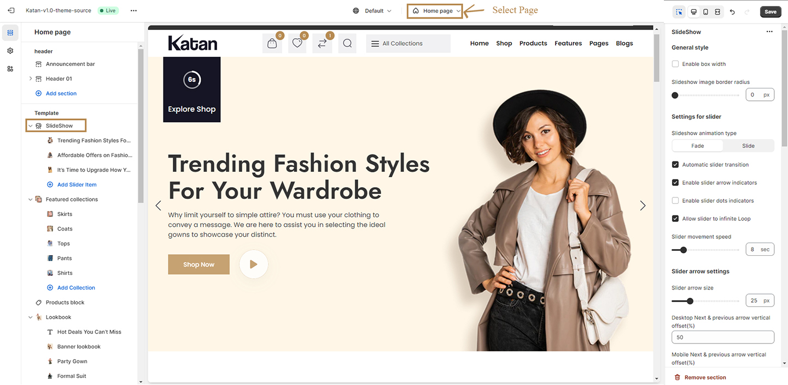

Katan: Multipurpose Shopify theme
Created:
By: easital_tech
Email: theme.easital@gmail.com
Thank you for purchasing my theme. If you have any questions that are beyond the scope of this help file, please feel free to email me via my user page contact form here. Thank you so much!.
Greetings
First of all, we want to thank you as our esteemed client for choosing Katan for your website. We genuinely believe that Katan will be one of the critical factors that contribute to the progress of your business. Let’s explore the theme to understand its features better! Please note that Katan might have bugs or issues after release, and we value your commitment to telling us so that we can fix and address the issue right away.
Katan - Multipurpose Shopify Theme - User Guide
Katan is an all-in-one, multipurpose Shopify theme with multiple demos, layouts, and styles that allow you to create different structures and satisfy any specific requirements for different kinds of online stores.
With Katan, we focus on crucial factors to build your successful store and offer features, including stunning design and user-friendly functionalities to bring a smooth shopping experience.
Let’s discover tons of professional and creative design options as well as advanced features in our theme spotlight + full theme features below. Grab Katan now to create a modern and professional e-commerce website store quickly.
Full Theme Features in Katan
You can find the theme features of Katan version 1.0 below:
Design Features:
- 5 Different Stunning Homepage Layouts.
- 4+ Layouts Options for Category Page
- 4+ Layouts Options for Product Page
- 3 Collection page layouts
- 5+ Blog page layouts
- 4+ Multiple Headers + Footers
Core Functionalities:
- Fully compatible with Shopify OS 2.0 (sections on every page)
- Header and Footer Builder without code.
- Advanced & easy to customized Mega menu
- Different types of sticky headers.
- Multiple Languages & Currencies
- Dynamic Product Filter & Filter by Tags, price, variation, vendor, etc.
- Compare
- Wishlist
- Bundle products
- Countdown timer
- Advanced built-in builder section
- Advanced predictive search feature
- Quick shopping bag
- Quick add to cart
- Product quick view
- Product variant image & color switcher
- Product variant dropdown switcher
- Custom Product Tabs (Different content for each of product)
- Easy managable products carousal
- Recent Sales Popup Notifications (Use fake data)
- Shipping calculator
- One click product checkout
- Related products
- Soldout timer & stock count (Use fake data)
- Custom png & svg logo, favicon upload settings,
- Animation
- Lookbook Module
- Lazy Loading Image
- Newsletter popup
- All google fonts supported
- Cross-device & cross-browser compatibility
- SEO & speed optimized code
Install Theme
Refer to our video for full instruction:
To install the theme please follow the below instructions:
- Please login to your Shopify store. If you don't have an account, please sign up at the Shopify store.
- From the left sidebar, go to Online Store ü†ö Themes.
- Click Add theme and choose the Upload zip file option from the dropdown box.
- From the Upload theme dialog display, click the Add file or drag a file option to upload the katan-v1.0-theme-source.zip file.
- Click Upload file button.
- Wait until the uploading process finishes. Then click on the Publish button to activate the source to be live.
Remember: You have to buy a plan to remove the password protection from the shopify store. Learn More .
Install App
After successfully uploading and activating the theme, proceed to the installation and activation of several other free apps/plugins that are required in the following steps:
- Log in to the Shopify App Store.
- Search the desired app for installation and click on it.
- On the app listing page, click Add app.
- In your Shopify administrator account, authorize the usage of the app by clicking on the Install app.

Info: The following two apps are needed to install when you use this theme. We tested the below apps on the theme and they work perfectly.If needed thirt party app please click here
1. Product Reviews
Shopify Product Reviews allow you to add a customer review feature to your products. This provides a way for your customers to engage with you, as well as each other to encourage sales.
To get the full specifications of this App, please hit the link below for installation first:
https://apps.shopify.com/judgeme
After installation please follow the steps from your shopify customization.
- From your Shopify admin, go to Online Store > Themes.
- Then click on the Customize button
- Click Theme App embeds
Here you can able to enable or disable ratings.
2. Shopify Search & Discovery
Shopify Search & Discovery app gives you more control over how customers discover your products. Customize search, filtering, and product recommendations, so that you can enhance your products’ relevance and increase sales.
To get the full specifications of this App, please hit the link below:
https://apps.shopify.com/search-and-discovery
How to Insert Demo Data
To set up the demo data for Katan Default Homepage Settings, please follow the below instructions:
Step 1: Upload Settings Data For Home Page
To set up data for Home Page Layouts, please follow below instruction:
-
SELECT ALL from index.json.text and COPY.
-
From your Shopify admin, go to Themes -> Actions -> Edit Code.
-
Find folder Templates -> Open file index.json -> SELECT ALL and DELETE then PASTE the copied preset from the external file.
Step 2: Upload Settings Data For Theme Settings
To set up the same data for Theme Settings, please follow below instruction:
-
SELECT ALL from settings_data.text and COPY.
-
From your Shopify admin, go to Themes -> Actions -> Edit Code.
-
Find folder Templates -> Open file settings_data.json -> SELECT ALL and DELETE then PASTE the copied preset from the external file.

Step 3: Upload Settings For Header
To set up data for Header Layouts, please follow below instruction:
-
SELECT ALL from header.group.text and COPY.
-
From your Shopify admin, go to Themes -> Actions -> Edit Code.
-
Find folder Templates -> Open file header-group.json -> SELECT ALL and DELETE then PASTE the copied preset from the external file.
Step 4: Upload Settings For Footer
To set up data for Footer Layouts, please follow below instruction:
-
SELECT ALL from footer-group.text and COPY.
-
From your Shopify admin, go to Themes -> Actions -> Edit Code.
-
Find folder Templates -> Open file footer-group.json -> SELECT ALL and DELETE then PASTE the copied preset from the external file.

Step 5: Demo data guidelines for Home Page
Find theme main folder DEMO_DATA.zip > Home Page.
| Home Page |
Json Home (with .json format) |
Json Setting (with .json format) |
Header (with .json format) |
Footer(with .json format) |
| Home 01 - Default |
index.json.txt |
settings_data.txt |
header.group.txt |
footer-group.txt |
| Home 02 - Petcare |
index.json.txt |
settings_data.txt |
header.group.txt |
footer-group.txt |
| Home 3 - Furniture |
index.json.txt |
settings_data.txt |
header.group.txt |
footer-group.txt |
| Home 4 - Suits |
index.json.txt |
settings_data.txt |
header.group.txt |
footer-group.txt |
| Home 5 - Watch |
index.json.txt |
settings_data.txt |
header.group.txt |
footer-group.txt |
Basic Configuration
Customer Account Creation
After creating an account with your store, tour customers can add their address details to their account so that the information auto-fills during checkout. Moreover, they can view their order history in your store and check the current order status after purchasing. For more details, please visit Customer accounts
- Click Settings and then click Customer accounts from your Shopify admin.
- Select "Show login link in the header of online store and at checkout" at Accounts in online store and checkout.
- Click Save to save all changes.
Shipping
Suppose you have a business with multiple locations. In that case, you can set shipping rates based on each location within each shipping profile. This will let you have more control over your shipping costs.
For businesses with multiple locations, you can set shipping rates per location within each shipping profile for greater control over your shipping costs.
To set the shipping rate, please follow these steps:
- Go to Shopify admin, click Settings, and locate Shipping and delivery.
- You can then configure the shipping rates based on the guidelines provided by this article from Shopify.
Currency & Language Settings
Settings to display Currency & Language on your store.
Currency
- In the theme editor, click Theme settings
- Locate Header
To learn how to display currencies in detail, please visit this official Shopify article.

Show Currency? Enable to display currency conversion on your store
Currency Manage by: Choose currency display by Shopify default or AdornThemes
Enable Auto currency switcher: Enable auto changed currency based on country.
Supported currencies: add supported currencies name here.
Show currency codes: Show currency code with product price.
Show Flag? Display country flag with currency conversion dropdown.
Language
To learn how to display Language in detail, please visit this official Shopify article.
Please downloads flags icons and upload from your store admin -> Content -> Files -> Upload files
Show Language? Enable to display language select menu on your store
Language Manage by Choose which app to use. Both are paid.
Show Flag? Display country flag with language menu.
Default Language: Add default language name for your store.
Choose Language menu for Weglot: Create and select language menu for weglot app.
Appearance: Set dropdown text and background color.
Theme Settings
To know about theme customization follow the shopify link.
Logo
- From your Shopify admin, go to Online Store > Themes.
- Then click on the Customize button
- Click Theme settings > Logo.
You will find the edit option here. Click "Change" to add or edit the logo image. Once the image is successfully uploaded, it will be visible in the navigation bar.
General
From "General," you can also modify the pixel size of the site wrapper and enable/disable the "Back to top" button and Preloader.

Typhography
Typography involves configuring font styles, sizes, and text alignment to enhance the visual elements of the website.
Note: Opting for a new font could impact your store's performance. Explore insights on utilizing system fonts to delve deeper into this aspect

Explore an extensive collection of freely available open-source fonts via Google Fonts.
-
Search Body Google Font.
-
Copy name of font which you choose from google font from above website link.
-
Paste text to input field.

| Settings |
Meaning |
| Load Font Weight |
if need to load more font weight you ust put font weight like this: 100; 200; 300; 400; 500; 600; 700;800; 900.
Note: Please note that whether your choosen font have particular weight or not
|
| Body Font Weight |
Adjust the font weight intended for the body text.
|
| Body Font Size |
Adjust the font size intended for the body text.
|
| Body Font Line Height |
Adjust the font line height intended for the body text.
|
| Heading Font Settings |
Heading Google Font: Just put font family name like: Jost, Open Sans, etc. Get more Fonts, this custom font only work when source font selecting form 'Google Font check screeshot'.
Load Font Weigth: if need to load more font weight you just put font weigh like this: 100; 200; 300; 400; 500; 600; 700;800; 900.
|
Colors
In the "Colors" section, you can edit the product or item cards, collection & search page, and carousels, as well as the color of the next & previous buttons of the carousels.
Product Template
In the Products Template section, you can specify the number of sold out items and the hours in which they were sold out. You can also input random numbers for the stock progress bar.

Product Card
From the Product Card section, you can modify the product card styles through the drop-down menu and choose a color variant switcher type from two options (solid color and variant image). You also have the option to show the sale badge.
Blog
From the Blog section, you can modify the blog card styles through the button click and choose enable/disable options for post tags, date, author, comment, excerpt.
Newsletter popup
In the Newsletter Popup section, you can choose a subscription method via Shopify (default) or MailChimp. You can enter your MailChimp URL and enable/disable the newsletter popup. You can also enable/disable social media and upload an image for the newsletter popup. Moreover, you can select a color for the newsletter text and adjust the popup delay time.
Shipping Rates
In the Shipping Rates Calculator section, you can hide/unhide the shipping rate calculator. You can also input a heading text for the calculator and select a specific country. Moreover, you can input a submit button label and a label when it's calculating.
Sales Natification
In the Sales Notification section, you have the option to enable/disable the option. If enabled, you can set the notification alignment and adjust the slider duration. Moreover, you can select specific products and input multiple locations.
Slide Show
To add this section, please follow the below steps:
- From your Shopify admin, go to Online Store ➝Themes
- Then click on the Customize button
- Click Add section and choose Slideshow
- You can add more Slider items
- In the slide show setting, you can customize the Layout and Slideshow animation
- You can customize the Slideshow display on multiple devices
- Moreover you can enable or disable the Slider transition, Arrow indicator, Dots indicator, and Slider loop
- Finally it can be customized through Spacing and Slider animation speed

| Settings |
Meaning |
| Enable Box Width |
Enable/disable the box width |
| Slideshow image border radius |
Control slide show image border radius.This option will work when you enable box width slide show. |
| Slideshow animation type |
There are two types of slider animation effect fade & slide. |
| Automatic slider transition |
This option work for slider autoplay. |
| Enable slider arrow indicators |
Enables/Disables slide show arrow.There are more options available for slider indicators, like color, background, etc. |
| Enable slider dots indicators |
Enables/Disables slide dots indicator.There are three type of slider indicator Bullets, Fraction,
progressbar
|
| Allow slider to infinite Loop |
Enables/Disables slide loop finite or infinite time. |
| Slider movement speed |
Control speen of slider movement. |
| Slider arrow size |
Control slider arrow size. |
| Slider arrow vertical offset control. |
Slider vertical offset controller for desktop or mobile view. |
| Slider arrow horizontal offset control |
Slider horizontal offset controller for desktop or mobile view. |
| Progressbar timer settings |
If enable 'Automatic slider transition' & 'Show progressbar timer' then will show progressbar timer |
| Progressbar timer active color |
Used to change active color of progress bar. |
| Adjust vertical placement |
Controls vertical placement for progressbar. |
| Adjust horizontal placements |
Controls horizontal placement for progressbar. |
| Active explore button |
Enables/disables active explore button. |
| Thumbnail settings |
Enable thumbnail for slider: Enables/disables thumbnail for slider.
Desktop view thumbnail show per row:
Used to show number of thumbnail images for sliders.
|
Feature Collection
| Settings |
Meaning |
| Collection Layout |
Manage to change layout design of Feature Collections |
| Enable full width section |
Enables/disables full width for feature Collections |
| Background color |
Used to change background color of Feature Collections |
| Background image |
Used to change background image of Feature Collections |
| Title, Select title tag, Sub title , Description |
User can change title, title text size, subtitle text, and description of the feature colectoion |
| Column gutter settings |
Controls the gap between grid card for both mobile and desktop devices. |
| Section top spacing |
There are two type of spacing for this padding and margin you can change space for desktop,tablet & mobiles. |
| Section bottom spacing |
There are two type of spacing for this padding and margin you can change space for desktop,tablet & mobiles. |
| General Style |
Title box text alignment: used to change alignment of text left, right, center
Title box bottom space: controls bottom space for title.
Title box max width(px): controls width of the title box.
Title color: used to change color of title.
Sub title color: used to change color of subtitle color.
Sub title background used to change color of subtitle background color color
|
Product Tab
| Settings |
Meaning |
| General Style |
Enable full width section: enables/disables width for product tab section.
Background color: change background color for section.
Background gradient color: change background gradient color for section.
Background image: used to change background color of tab section.
Title: used to change title of the particular section.
Select title tag: choose multiple title tag like h1,h2,h3,h4,h5,h6,p,div, span for tab section.
subtitle: used to change subtitle of the text.
Description: add some description text to input field.
|
| Collection grid settings
|
Layout type: There are two types of layout grid & carousel slide you can both style to this section.
Background gradient color: Thange background gradient color for section.
Maximum product to show: Controls number of products to show.
Desktop column per row: Used to manage column for desktop device.
Tablet column per row: Used to manage column for tablet device.
Mobile column per row: Used to manage column for tablet device.
|
| Column gutter settings
|
Desktop column gap(px):Manage to gap between card for desktop devices. .
Mobile column Gap(px): Manage to gap between card for mobile devices.
|
| Settings for slider
|
Automatic slider transition:This option work for slider autoplay.
Enable slider arrow indicators: Enables/Disables slide show arrow.There are more options available for slider indicators, like color, background, etc.
Enable slider dots indicators: Enables/Disables slide dots indicator.There are three type of slider indicator Bullets, Fraction, progressbar.
Allow slider to infinite Loop: Enables/Disables slide loop finite or infinite time..
Enable slider center mode: Enables/Disables slider for center mode.
Turn on Two-Row slider mode: Divide slider to row .
|
Look Book
| Settings |
Meaning |
| General Style |
Enable full width section: enables/disables width for product tab section.
Background color: change background color for section.
Background gradient color: change background gradient color for section.
Background image: used to change background color of tab section.
|
| Section top spacing |
There are two type of spacing for this padding and margin you can change space for desktop,tablet & mobiles. |
| Section bottom spacing |
There are two type of spacing for this padding and margin you can change space for desktop,tablet & mobiles. |
| Column gutter settings
|
Desktop column gap(px):Manage to gap between card for desktop devices. .
Mobile column Gap(px): Manage to gap between card for mobile devices.
|
Builder
| Settings |
Meaning |
| General Style |
Enable full width section: Enables/disables width for product tab section.
Desktop column gap(px): Manage to gap between card for desktop devices. .
Mobile column Gap(px): Manage to gap between card for mobile devices.
Background color: change background color for section.
Background gradient color: change background gradient color for section.
Background position: If you want to add background postition at first you have to add background image then you can add multiple position like Top center, Top Left, Center center, Bottom center, Left Center, Left bottom, Left bottom, Right top, Right center, Right bottom.
Background size: To handle background position you can add multiple option like: Auto, Contain, Cover, Custom. If set background size 'custom' then will work this field, also using size including 'px,em,%,rem etc.' like this '50%,10rem,300px'
Dektop background custom size : You can control custom background size for mobile.
Mobile background custom size : You can make custom background size for desktop.
Enable background parallax : Enables/disables background parallax for product tab section
|
| Section top spacing |
There are two type of spacing for this padding and margin you can change space for desktop,tablet & mobiles. |
| Section bottom spacing |
There are two type of spacing for this padding and margin you can change space for desktop,tablet & mobiles. |
| Section style settings |
Section text alignment: Used to manage text alignment like: left, right, center.
Section vertical alignment: Used to manage section vertical alignment like: Top, Middle, Bottom.
Section Z-Index: Used to manage stack order for this section.
Section custom class
: You can use custom class for this section.
Mobile settings
: Enables/disables reverse of the row for mobile devices.
|
Brand Logos
| Settings |
Meaning |
| Layout |
Grid Layout: Divide card into grid to make responsive for all design
Carousal Layout: Used to change grid to carousel layout
Marquee: Used to create auto moving carousel.
|
| General Style |
Enable full width section: enables/disables width for product tab section.
Background color: change background color for section.
Background gradient color: change background gradient color for section.
Background image: used to change background color of tab section.
Title: used to change title of the particular section.
Select title tag: choose multiple title tag like h1,h2,h3,h4,h5,h6,p,div, span for tab section.
subtitle: used to change subtitle of the text.
Description: add some description text to input field.
|
| Section top spacing |
There are two type of spacing for this padding and margin you can change space for desktop,tablet & mobiles. |
| Section bottom spacing |
There are two type of spacing for this padding and margin you can change space for desktop,tablet & mobiles. |
| Grid settings |
There are three types of grid settings such as Desktop column per row, Tablet column per row, Mobile column per row you can manage number of products show for each devices. |
| Column gutter settings
|
Desktop column gap(px):Manage to gap between card for desktop devices. .
Mobile column Gap(px): Manage to gap between card for mobile devices.
|
| Settings for slider
|
Automatic slider transition:This option work for slider autoplay.
Enable slider arrow indicators: Enables/Disables slide show arrow.There are more options available for slider indicators, like color, background, etc.
Enable slider dots indicators: Enables/Disables slide dots indicator.There are three type of slider indicator Bullets, Fraction, progressbar.
Allow slider to infinite Loop: Enables/Disables slide loop finite or infinite time..
Enable slider center mode: Enables/Disables slider for center mode.
Turn on Two-Row slider mode: Divide slider to row .
Slider movement speed: Controls slider movement trasition time for carousel.
|
| Slider Next & Previous arrow settings
|
Always show arrow:Controls show/hide arrow button for slider.
Desktop Next & previous arrow vertical offset(%): Adjust the vertical positioning of the next and previous arrows on desktop devices by specifying a percentage offset. This setting allows you to fine-tune the placement of these navigation elements, ensuring optimal visual harmony and usability within the desktop interface.
Mobile Next & previous arrow vertical offset(%): Tailor the vertical placement of the next and previous arrows specifically for mobile devices by indicating a percentage offset. This customization ensures that the arrows are appropriately positioned on smaller screens, maintaining a user-friendly and aesthetically pleasing experience on mobile platforms.
Previous arrow horizontal Desktop offset(%): Fine-tune the horizontal positioning of the previous arrow on desktop screens with a percentage offset. This setting allows you to control the left or right alignment of the previous arrow, ensuring a seamless integration into the desktop layout.
Previous arrow horizontal Mobile offset(%): Customize the horizontal placement of the previous arrow on mobile devices with a specified percentage offset. This adjustment is crucial for optimizing the arrow's position within the limited screen real estate of mobile interfaces, contributing to a smoother and more user-friendly navigation experience.
Next arrow horizontal Desktop offset(%): Modify the horizontal positioning of the next arrow on desktop displays by providing a percentage offset. This setting allows for precise control over the left or right alignment of the next arrow, ensuring it complements the overall design and functionality of the desktop interface.
Next arrow horizontal Mobile offset(%): Define the horizontal placement of the next arrow on mobile screens with a designated percentage offset. This customization is essential for ensuring that the next arrow aligns harmoniously within the constraints of mobile layouts, enhancing the overall navigation experience on smaller screens.
|
| Section style settings
|
Enable image grayscale:Toggle this setting to activate grayscale mode for images on this platform. When enabled, this feature will convert color images to grayscale, removing their color saturation..
Title box text alignment: Customize text alignment in the title box with options for left, right, and center alignment, allowing for precise control over the visual presentation.
Title box bottom space: Controls bottom space for title.
Title box max width(px): Define the maximum width of the title box to control the spatial dimensions of the displayed content.
Title Color: Set the color of the title text to establish the visual style and prominence of the primary content..
Subtitle Color & Subtitle Background: Customize the color of the subtitle text and its background, ensuring a harmonious and visually appealing combination for supplementary content within the title box.
|
Product Block

| Settings |
Meaning |
| Layout |
Grid Layout: Divide card into grid to make responsive for all design
Carousal Layout: Used to change grid to carousel layout
|
| General Style |
Enable full width section: enables/disables width for product tab section.
Background color: change background color for section.
Background gradient color: change background gradient color for section.
Background image: used to change background color of tab section.
Title: used to change title of the particular section.
Select title tag: choose multiple title tag like h1,h2,h3,h4,h5,h6,p,div, span for tab section.
subtitle: used to change subtitle of the text.
Description: add some description text to input field.
Button text: Specify the text to be displayed on the button
Button link: Input the URL or destination link for the button, directing users to the designated page or resource upon clicking.
Select Collection: Choose a specific collection for the button, providing a seamless way to associate it with relevant content or products on your platform.
Select Specific Products: Choose particular products to associate with the current configuration, ensuring that the button or element is directly linked to the specified items for a more targeted and personalized user experience.
|
| Image Ratio |
Original: Maintain the original aspect ratio of images for a true representation of the content.
Portrait: Opt for a portrait-oriented image ratio, ideal for emphasizing vertical content.
Square: Select a square image ratio for a balanced and uniform presentation, suitable for various design scenarios.
|
| Maximum product to show |
Maximum product to show: Set the limit for the maximum number of products to be displayed.
Desktop Column per Row: Customize the column layout for tablet devices.
Tablet Column per Row: Customize the column layout for tablet devices.
Mobile Column per Row: Customize the column layout for mobile devices.
|
| Column gutter settings
|
Desktop column gap(px):Manage to gap between card for desktop devices. .
Mobile column Gap(px): Manage to gap between card for mobile devices.
|
| Settings for slider
|
Automatic slider transition:This option work for slider autoplay.
Enable slider arrow indicators: Enables/Disables slide show arrow.There are more options available for slider indicators, like color, background, etc.
Enable slider dots indicators: Enables/Disables slide dots indicator.There are three type of slider indicator Bullets, Fraction, progressbar.
Allow slider to infinite Loop: Enables/Disables slide loop finite or infinite time..
Enable slider center mode: Enables/Disables slider for center mode.
Turn on Two-Row slider mode: Divide slider to row .
Slider movement speed: Controls slider movement trasition time for carousel.
|
| Slider Next & Previous arrow settings
|
Always show arrow:Controls show/hide arrow button for slider.
Desktop Next & previous arrow vertical offset(%): Adjust the vertical positioning of the next and previous arrows on desktop devices by specifying a percentage offset. This setting allows you to fine-tune the placement of these navigation elements, ensuring optimal visual harmony and usability within the desktop interface.
Mobile Next & previous arrow vertical offset(%): Tailor the vertical placement of the next and previous arrows specifically for mobile devices by indicating a percentage offset. This customization ensures that the arrows are appropriately positioned on smaller screens, maintaining a user-friendly and aesthetically pleasing experience on mobile platforms.
Previous arrow horizontal Desktop offset(%): Fine-tune the horizontal positioning of the previous arrow on desktop screens with a percentage offset. This setting allows you to control the left or right alignment of the previous arrow, ensuring a seamless integration into the desktop layout.
Previous arrow horizontal Mobile offset(%): Customize the horizontal placement of the previous arrow on mobile devices with a specified percentage offset. This adjustment is crucial for optimizing the arrow's position within the limited screen real estate of mobile interfaces, contributing to a smoother and more user-friendly navigation experience.
Next arrow horizontal Desktop offset(%): Modify the horizontal positioning of the next arrow on desktop displays by providing a percentage offset. This setting allows for precise control over the left or right alignment of the next arrow, ensuring it complements the overall design and functionality of the desktop interface.
Next arrow horizontal Mobile offset(%): Define the horizontal placement of the next arrow on mobile screens with a designated percentage offset. This customization is essential for ensuring that the next arrow aligns harmoniously within the constraints of mobile layouts, enhancing the overall navigation experience on smaller screens.
|
| Section top spacing |
There are two type of spacing for this padding and margin you can change space for desktop,tablet & mobiles. |
| Section bottom spacing |
There are two type of spacing for this padding and margin you can change space for desktop,tablet & mobiles. |
| Section style settings
|
Button Type:There are three types of button Primary Button,Secondary Button, Invert Button you can change button style by selecting this options.
Title box text alignment: Customize text alignment in the title box with options for left, right, and center alignment, allowing for precise control over the visual presentation.
Title box bottom space: Controls bottom space for title.
Title box max width(px): Define the maximum width of the title box to control the spatial dimensions of the displayed content.
Title Color: Set the color of the title text to establish the visual style and prominence of the primary content..
Subtitle Color & Subtitle Background: Customize the color of the subtitle text and its background, ensuring a harmonious and visually appealing combination for supplementary content within the title box.
|
Customer Reviews
| Settings |
Meaning |
| Review style layout |
There are two type of layout: Layout 1 and Layout 2 you can change layout style for review section.
|
| General Style |
Background color: change background color for section.
Background gradient color: change background gradient color for section.
Background image: used to change background color of tab section.
Enable full width section: enables/disables width for product tab section.
Title: used to change title of the particular section.
Select title tag: choose multiple title tag like h1,h2,h3,h4,h5,h6,p,div, span for tab section.
subtitle: used to change subtitle of the text.
Description: add some description text to input field.
|
| Section top spacing |
There are two type of spacing for this padding and margin you can change space for desktop,tablet & mobiles. |
| Section bottom spacing |
There are two type of spacing for this padding and margin you can change space for desktop,tablet & mobiles. |
| Grid settings |
There are three types of grid settings such as Desktop column per row, Tablet column per row, Mobile column per row you can manage number of products show for each devices. |
| Column gutter settings
|
Desktop column gap(px):Manage to gap between card for desktop devices. .
Mobile column Gap(px): Manage to gap between card for mobile devices.
|
| Settings for slider
|
Enable quote icon? Enables/disables quote icon for review.
Automatic slider transition:This option work for slider autoplay.
Enable slider arrow indicators: Enables/Disables slide show arrow.There are more options available for slider indicators, like color, background, etc.
Enable slider dots indicators: Enables/Disables slide dots indicator.There are three type of slider indicator Bullets, Fraction, progressbar.
Allow slider to infinite Loop: Enables/Disables slide loop finite or infinite time..
Enable slider center mode: Enables/Disables slider for center mode.
Turn on Two-Row slider mode: Divide slider to row .
Slider movement speed: Controls slider movement trasition time for carousel.
|
| Slider Next & Previous arrow settings
|
Desktop Next & previous arrow vertical offset(%): Adjust the vertical positioning of the next and previous arrows on desktop devices by specifying a percentage offset. This setting allows you to fine-tune the placement of these navigation elements, ensuring optimal visual harmony and usability within the desktop interface.
Mobile Next & previous arrow vertical offset(%): Tailor the vertical placement of the next and previous arrows specifically for mobile devices by indicating a percentage offset. This customization ensures that the arrows are appropriately positioned on smaller screens, maintaining a user-friendly and aesthetically pleasing experience on mobile platforms.
Previous arrow horizontal Desktop offset(%): Fine-tune the horizontal positioning of the previous arrow on desktop screens with a percentage offset. This setting allows you to control the left or right alignment of the previous arrow, ensuring a seamless integration into the desktop layout.
Previous arrow horizontal Mobile offset(%): Customize the horizontal placement of the previous arrow on mobile devices with a specified percentage offset. This adjustment is crucial for optimizing the arrow's position within the limited screen real estate of mobile interfaces, contributing to a smoother and more user-friendly navigation experience.
Next arrow horizontal Desktop offset(%): Modify the horizontal positioning of the next arrow on desktop displays by providing a percentage offset. This setting allows for precise control over the left or right alignment of the next arrow, ensuring it complements the overall design and functionality of the desktop interface.
Next arrow horizontal Mobile offset(%): Define the horizontal placement of the next arrow on mobile screens with a designated percentage offset. This customization is essential for ensuring that the next arrow aligns harmoniously within the constraints of mobile layouts, enhancing the overall navigation experience on smaller screens.
|
| General style
|
Title box text alignment: Customize text alignment in the title box with options for left, right, and center alignment, allowing for precise control over the visual presentation.
Title box bottom space: Controls bottom space for title.
Title box max width(px): Define the maximum width of the title box to control the spatial dimensions of the displayed content.
Title Color: Set the color of the title text to establish the visual style and prominence of the primary content..
Subtitle Color & Subtitle Background: Customize the color of the subtitle text and its background, ensuring a harmonious and visually appealing combination for supplementary content within the title box.
|
| Review box settings
|
Review name font size: Control font size for reviews text.
Review name font family: Manage multiple options to change font family such as Body font, Headeing font, Alternative Font.
Review name font weight: Manage multiple options to change font weight such as Light, Normal, Medium etc.
Review designation font size: Adjust the font size of the review designation to control the reviewer's title.
Review Box Border Radius:: Define the border radius for the review box, shaping its corners and creating a visually appealing container for user reviews.
Review Box Background: Set the background color for the review box, customizing its visual appearance to match the overall design scheme.
Enable Border in Review Star Area: Toggle the option to add a border around the star rating area.
|
Featured Blogs Post
| Settings |
Meaning |
| General Style |
Enable full width section: Enables/disables width for product tab section.
Background color: change background color for section.
Background gradient color: change background gradient color for section.
Background image: used to change background color of tab section.
Title: used to change title of the particular section.
Select title tag: choose multiple title tag like h1,h2,h3,h4,h5,h6,p,div, span for tab section.
subtitle: used to change subtitle of the text.
Description: add some description text to input field.
Button text: Specify the text to be displayed on the button
Button link: Input the URL or destination link for the button, directing users to the designated page or resource upon clicking.
|
| Section top spacing |
There are two type of spacing for this padding and margin you can change space for desktop,tablet & mobiles. |
| Section bottom spacing |
There are two type of spacing for this padding and margin you can change space for desktop,tablet & mobiles. |
| Blog & Grid Style |
Choose a Featured Blog Post: You can change each blogs section according to category.
Count Title Word Length: Controls the word length for blogs.
Show Excerpt: Show/hide blog details into card.
Show Read More: Show/hide read/more button to blogs.
Grid Type: There are two types of grid fisrt one id grid blog and last one is carousal slide.
Maximum Number of Blog Posts to Display: Option for showing number of blogs to be added.
|
| Column gutter settings
|
Desktop column gap(px):Manage to gap between card for desktop devices. .
Mobile column Gap(px): Manage to gap between card for mobile devices.
|
| Settings for slider
|
Desktop column gap(px): Controls gap for slider in desktop mode.
Tablet column per row: Controls gap for slider in tablet mode.
Mobile column per row: Controls gap for slider in mobile mode.
Automatic slider transition:This option work for slider autoplay.
Enable slider arrow indicators: Enables/Disables slide show arrow.There are more options available for slider indicators, like color, background, etc.
Enable slider dots indicators: Enables/Disables slide dots indicator.There are three type of slider indicator Bullets, Fraction, progressbar.
Allow slider to infinite Loop: Enables/Disables slide loop finite or infinite time..
Enable slider center mode: Enables/Disables slider for center mode.
Turn on Two-Row slider mode: Divide slider to row .
Slider movement speed: Controls slider movement trasition time for carousel.
|
| Slider Next & Previous arrow settings
|
Always show arrow: Controls show/hide arrow button for slider.
Desktop Next & previous arrow vertical offset(%): Adjust the vertical positioning of the next and previous arrows on desktop devices by specifying a percentage offset. This setting allows you to fine-tune the placement of these navigation elements, ensuring optimal visual harmony and usability within the desktop interface.
Mobile Next & previous arrow vertical offset(%): Tailor the vertical placement of the next and previous arrows specifically for mobile devices by indicating a percentage offset. This customization ensures that the arrows are appropriately positioned on smaller screens, maintaining a user-friendly and aesthetically pleasing experience on mobile platforms.
Previous arrow horizontal Desktop offset(%): Fine-tune the horizontal positioning of the previous arrow on desktop screens with a percentage offset. This setting allows you to control the left or right alignment of the previous arrow, ensuring a seamless integration into the desktop layout.
Previous arrow horizontal Mobile offset(%): Customize the horizontal placement of the previous arrow on mobile devices with a specified percentage offset. This adjustment is crucial for optimizing the arrow's position within the limited screen real estate of mobile interfaces, contributing to a smoother and more user-friendly navigation experience.
Next arrow horizontal Desktop offset(%): Modify the horizontal positioning of the next arrow on desktop displays by providing a percentage offset. This setting allows for precise control over the left or right alignment of the next arrow, ensuring it complements the overall design and functionality of the desktop interface.
Next arrow horizontal Mobile offset(%): Define the horizontal placement of the next arrow on mobile screens with a designated percentage offset. This customization is essential for ensuring that the next arrow aligns harmoniously within the constraints of mobile layouts, enhancing the overall navigation experience on smaller screens.
|
| Section style settings
|
Button Type:There are three types of button Primary Button
Secondary Button, Invert Button you can change button style by selecting this options.
Title box text alignment: Customize text alignment in the title box with options for left, right, and center alignment, allowing for precise control over the visual presentation.
Title box bottom space: Controls bottom space for title.
Title box max width(px): Define the maximum width of the title box to control the spatial dimensions of the displayed content.
Title Color: Set the color of the title text to establish the visual style and prominence of the primary content..
Subtitle Color & Subtitle Background: Customize the color of the subtitle text and its background, ensuring a harmonious and visually appealing combination for supplementary content within the title box.
|
Collection Tabs
By clicking the add section button, you can show other sections that can be added to the layout.
| Settings |
Meaning |
| General Style |
Enable full width section: Enables/disables width for product tab section.
Background color: change background color for section.
Background image: used to change background color of tab section.
Title: used to change title of the particular section.
Select title tag: choose multiple title tag like h1,h2,h3,h4,h5,h6,p,div, span for tab section.
|
| Section top spacing |
There are two type of spacing for this padding and margin you can change space for desktop,tablet & mobiles. |
| Section bottom spacing |
There are two type of spacing for this padding and margin you can change space for desktop,tablet & mobiles. |
Newsletter
| Settings |
Meaning |
| General Style |
Enable full width section: Enables/disables width for product tab section.
Background color: change background color for section.
Background gradient color: change background gradient color for section.
Background image: used to change background color of tab section.
Background position: If you want to add background postition at first you have to add background image then you can add multiple position like Top center, Top Left, Center center, Bottom center, Left Center, Left bottom, Left bottom, Right top, Right center, Right bottom.
Background size: To handle background position you can add multiple option like: Auto, Contain, Cover, Custom. If set background size 'custom' then will work this field, also using size including 'px,em,%,rem etc.' like this '50%,10rem,300px'
Dektop background custom size : You can control custom background size for mobile.
Mobile background custom size : You can make custom background size for desktop.
|
| Section top spacing |
There are two type of spacing for this padding and margin you can change space for desktop,tablet & mobiles. |
| Section bottom spacing |
There are two type of spacing for this padding and margin you can change space for desktop,tablet & mobiles. |
| Title Settings |
Title: used to change title of the particular section.
Select title tag: choose multiple title tag like h1,h2,h3,h4,h5,h6,p,div, span for tab section.
Font weight: Manage multiple options to change font weight such as Light, Normal, Medium etc.
Margin bottom: Controls bottom margin fot newsletter section.
Title text alignment: Customize text alignment in the title box with options for left, right, and center alignment, allowing for precise control over the visual presentation.
Paragraph: add some description text to input field.
Content color: Change color to content.
Content font size: Controls font size for content.
Paragraph text alignment: Customize text alignment in the title box with options for left, right, and center alignment, allowing for precise control over the visual presentation
|
| Newsletter Form Settings |
Placeholder: Change placeholder name in input type.
Button text: Used to change text for button.
Email Input Field Border Color: Specify the border color for the email input field.
Margin bottom: Controls bottom margin fot newsletter section.
Form Container Max Width:Define the maximum width of the form container.
Form Alignment: Set the alignment for the form within its container.
Button Type:There are three types of button Primary Button,Secondary Button, Invert Button you can change button style by selecting this options.
Container background: Used to control background color for the container.
Container border color: Used to control container background color for the container
|
Flip Box
| Settings |
Meaning |
| Flip box Style |
Enable full width section: Enables/disables width for product tab section.
Background color: change background color for section.
Background gradient color: change background gradient color for section.
Background image: used to change background color of tab section.
|
| Column gutter settings
|
Desktop column gap(px):Manage to gap between card for desktop devices. .
Mobile column Gap(px): Manage to gap between card for mobile devices.
|
| Section top spacing |
There are two type of spacing for this padding and margin you can change space for desktop,tablet & mobiles. |
| Section bottom spacing |
There are two type of spacing for this padding and margin you can change space for desktop,tablet & mobiles. |
| General style |
Flipbox desktop min heigth(px): Used to change min height for flip box desktop version.
Flipbox mobile min heigth(px): Used to change min height for flip box mobile version. |
Products
Products ( Default )
How to select different products page?
-
Go to Home page dropdown.
-
Select Products option
-
Select Products that you want (Default Product, bottom-thumnails, expandable, right-thumbnails, tabular-description)
Product Information
| Settings |
Meaning |
| Style |
Used to change the style for product section.
|
| Product info column align |
Used to change the alignment of the section.
|
Products ( bottom-thumnails )
Products ( expandable )
Collections
Product Grid
| Settings |
Meaning |
| Sidebar Position |
Left: Align sidebar to left position
Right: Align sidebar to right position
None: Remove sidebar
|
| Sidebar column size |
Increase/Decrease the sidebar column size. |
| Product column size |
Increase/Decrease the product column size. |
| Column gap for sidebar and product showcase |
Increase/Decrease the gap between product card. |
| Products per page |
Showing the number of products for each page. |
How to create a page?
Web pages are a way to provide general information about your business or products.
- Go to Online Store > Pages.
- Click Add page.
- Enter Title and Content for the page. Be descriptive and clear when choosing your webpage title. The webpage Title will be displayed in the tab or title bar of browsers.
- Under Visibility, select when the page should be published. By default, your new webpage will be visible when you click Save. Select the Hidden option if you want your new webpage to be hidden from your online store, or click Set a specific publish date to control when your web page is published.
- Click Save.
- Optional: To make a published web page appear in your Online store navigation, add a Link to it in a menu.
Login Page
The Login page shows where customers can access their account.
- From your Shopify admin, go to Online Store ➝ Customize.
- Then click on the Customize button.
- Choose Classic customers accounts from the dropdown menu.
- Select Customer login.
- Edit Customer login page.
- Click Save.

Default Page
Note: Your default page URL must be: /pages/typhography
About Us Page
Note: Your about us page URL must be: /pages/about-us
Wishlist Page
Note: Your wishlist page URL must be: /pages/wishlist
Compare Page
Note: Your compare page URL must be: /pages/compare
FAQs Page
Note: Your FAQs page URL must be: /pages/faq
How to create/upload blogs?
To add a blog, please follow the steps below:
- From your Shopify admin, go to Online Store.
- Then click on the Blog posts button.
- Click on Add blog posts.

Source
Katan has used the following plugins, as listed below:
-
Swiper Slider
-
AJAX CART API
-
Copyright© 2023 Liquid Ajax Cart (opensource.org)
- Licensed under the MIT and GPL licenses: Visit Link
-
Wishlist and Compare
-
Copyright© 2021 Daniel Lerman
- Licensed under the MIT
- Wishlist and Compare: Visit Link
-
Google Fonts
-
Freepik
-
Copyright © 2010-2023 Freepik Company S.L. All rights reserved.
-
Visit Link
Theme Support
Numerous fundamental and complicated questions have been answered in this documentation. Therefore, kindly go through our documentation first. If it’s not too much trouble, read it cautiously and follow the steps from start to finish. You will be able to track down the nitty-gritty guidelines to set up components in the theme.
Our item support includes:
- Answering queries or issues in regards to the theme and its elements
- Giving updated versions to guarantee that the theme works well
- Fixing bugs and reporting issues
We will make an honest effort to answer your queries right away. We will try our best to reply to your queries promptly to remove any confusion related to the theme’s features and address any issues.
- We will reply to your query regarding theme features and issues within 24 hours
- Regarding queries about theme customization, we will reply to you within 48 hours (but normally much sooner)
- Based on the nature of the issues, requests, or questions, sometimes it may require more time than usual
DON’T FORGET TO RATE OUR WORK.
Your ideas and suggestions are highly valued and assist us in making better products. Thank you, and have a great day!


Social Media
In the Social Media section, you can enable/disable the social sharing options for Facebook, X (Twitter), and Pinterest and add the links to your Pinterest, TikTok, YouTube, and X (Twitter) accounts. You can also add your WhatsApp number and Skype ID.